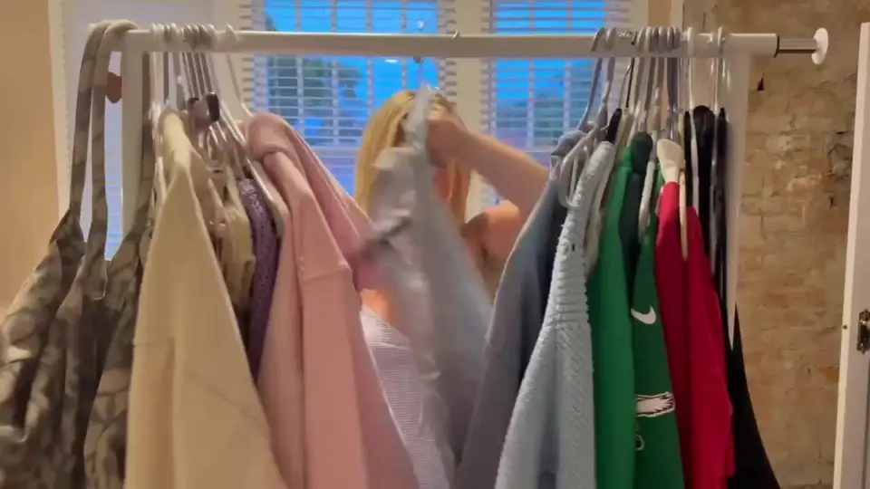

Color guide · For anyone tired of buying colors that don't suit them
What colors look good on me?
The colors that look good on you are the ones that match three things about your natural coloring: your undertone (warm or cool), your depth (how light or deep your hair, eyes and skin are) and your clarity (whether bold, saturated colors or soft, dusty ones suit you). Those three place you in one of twelve color seasons, and each season has its own palette. At The Color Code, every palette has eight colors to wear, three to skip and why, two lip shades, two blush shades and three eye shades. You can see all twelve below, and our free quiz tells you which one is yours in about a minute.

The twelve seasons and their colors
These are our real palettes, finalized by Bella and Whitney in September 2026. Spring and Autumn are the warm seasons; Summer and Winter are the cool ones. The word before the season tells you what matters most: Light and Deep are about depth, Bright and Soft are about clarity, and True means warmth or coolness leads.
Light Spring
Warm, light and clear — delicate warmth with a fresh glow.
- Peach
- Warm pink
- Light coral
- Buttercup
- Mint
- Aqua
- Periwinkle
- Cream
Skip: Black, Burgundy, Charcoal. These heavy, dark shades overpower your light, warm coloring.
True Spring
Warm and clear — golden, sunny color at full strength.
- Coral
- Poppy
- Golden yellow
- Kelly green
- Turquoise
- Warm aqua
- Camel
- Ivory
Skip: Black, Icy grey, Dusty mauve. These cool, dusty or stark shades dull your warm, golden coloring.
Bright Spring
Clear and bright with warmth — high contrast and vivid.
- Hot coral
- Bright watermelon
- Lemon
- Emerald
- Bright turquoise
- Cobalt
- Violet
- Clear white
Skip: Dusty rose, Olive, Beige. These muted, earthy shades flatten the brightness in your coloring.
Light Summer
Cool, light and soft — airy pastels with a blue base.
- Powder blue
- Lavender
- Rose pink
- Soft raspberry
- Seafoam
- Sky
- Light grey
- Soft white
Skip: Orange, Black, Mustard. These warm, heavy shades overpower your light, cool coloring.
True Summer
Cool and soft — blue-based, gently muted color.
- Rose
- Raspberry
- Soft navy
- Periwinkle
- Blue spruce
- Slate blue
- Cool grey
- Soft white
Skip: Orange, Camel, Bright yellow. These warm, golden shades clash with your cool undertone.
Soft Summer
Muted and cool-leaning — smoky, blended, gentle color.
- Dusty rose
- Mauve
- Sage
- Soft teal
- Denim
- Cocoa
- Pewter
- Oyster
Skip: Black, Bright orange, Hot pink. These harsh, high-contrast shades overwhelm your soft, muted coloring.
Soft Autumn
Muted and warm-leaning — earthy, gentle, sun-faded color.
- Salmon
- Terracotta
- Sage
- Olive
- Soft teal
- Camel
- Mushroom
- Warm cream
Skip: Black, Icy pink, Royal blue. These icy, high-contrast shades fight your soft, warm coloring.
True Autumn
Warm and rich — golden, earthy, spiced color.
- Rust
- Pumpkin
- Mustard
- Olive
- Forest
- Teal
- Chocolate
- Cream
Skip: Icy blue, Fuchsia, Stark white. These icy, cool shades fight your warm undertone.
Deep Autumn
Deep and warm — rich, dark, earthy color with depth.
- Burgundy
- Tomato red
- Burnt orange
- Deep teal
- Forest
- Aubergine
- Espresso
- Warm ivory
Skip: Pastel pink, Icy grey, Baby blue. These pale, icy shades wash out your deep, warm coloring.
Bright Winter
Clear and bright with coolness — vivid, icy, high contrast.
- True red
- Hot pink
- Cobalt
- Emerald
- Bright violet
- Icy lemon
- Black
- Pure white
Skip: Camel, Mustard, Dusty mauve. These warm, muted shades dull the clarity of your cool coloring.
True Winter
Cool and clear — pure, crisp, blue-based color.
- Blue red
- Magenta
- Royal blue
- Pine
- Icy pink
- Icy blue
- Navy
- Pure white
Skip: Orange, Camel, Olive. These warm, earthy shades fight your cool undertone.
Deep Winter
Deep and cool — dark, dramatic, jewel-toned color.
- Black cherry
- Ruby
- Sapphire
- Emerald
- Amethyst
- Charcoal
- Black
- Icy white
Skip: Peach, Camel, Pastel yellow. These warm, pale shades wash out your deep, cool coloring.
How to use your palette when you shop
Your palette works for clothes, makeup and accessories. Before you buy, hold the item next to your face and compare it with your palette on your phone. If it is close to one of your eight colors, it is a safe buy. If it looks like one of your three colors to skip, put it back. For a formal or bid day dress, start from your season's strongest colors rather than its neutrals. Your palette stays on your phone, and in your free account if you make one, so you can pull it up in the store.
Not sure about your undertone yet? Start with how to tell if you are warm or cool.